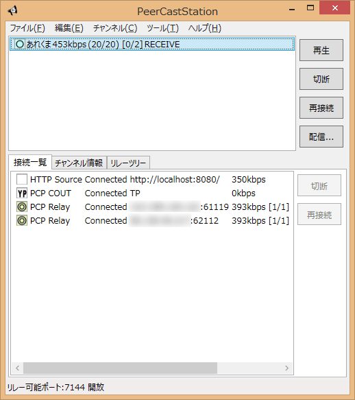
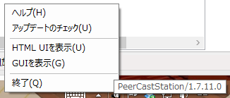
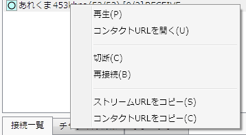
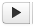
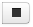

使い方
使い方 - GUI編
起動すると次のような画面になります。

monoでは現在GUIは起動しません。HTML UIを使用してください。HTML UIの使い方は使い方 - HTML UI編を見てください。
Windowsではウィンドウを閉じても終了しません。メニューからファイル(F)→終了(Q)を選択するか、タスクトレイにあるアイコンを右クリックして終了(Q)を実行してください。

設定
まずはメニューからツール(T)→設定(S)…メニューを選択して設定画面を出します。

ポートは既定で7144が設定されています。基本的には変更する必要はありません。 ルータのポート開放は手動で行ってください。
開放確認ボタンを押すとポートが空けられているか確認できます。「開放されています」になった場合は問題ありません。「未開放です」になった場合は使っているマシンに向けてポートが開放されていません。設定の方法はルータの説明を見てください。
ポート番号を変更した場合は開放確認ボタンを押す前に右下の適用ボタンを押しておいてください。
あとは最大上り帯域を設定しましょう。 最大上り帯域の合計は自動設定ボタンを押すことで設定できます。しばらく時間がかかるので(長くて30秒程度)押したら気長に待ってください。 計測した上り帯域数の80%の値が自動的に設定されます。
最大上り帯域のチャンネル毎の方は制限無しのままで問題ありません。一つのチャンネルで帯域が埋まると困るなど判断できる場合に適度に設定してください。
チャンネル自動切断は終了したチャンネルなどを自動的にチャンネル一覧から消す(リレーも切る)機能です。既定では接続していない(視聴もリレーもしていない)状態が30分続くとチャンネルが消えるようになっています。使ってみて好きなように設定してください。
配信を見るだけならここまで設定すれば十分です。OKボタンを押して閉じてください。
配信を見る
新しく配信を見るのは、WebブラウザでYPのページからPlayリンクで再生するか、各種YPブラウザで再生を開始してください。 PeerCastStation内蔵のYPブラウザを使用するにはYPブラウザのヘルプを見てください。
接続しているチャンネルはチャンネル一覧に出ます。
チャンネルを選択して再生ボタンを押すと、ブラウザ経由でプレイリストを開きます。
切断ボタンは選択しているチャンネルの接続を切り、リストから削除します。
再接続ボタンは選択しているチャンネルのリレーをつなぎなおします。
チャンネル一覧で右クリックするか、上のメニューからチャンネル(C)を選ぶと選択しているチャンネルに対して追加の操作が行なえます。

再生・切断・再接続メニューはそれぞれ再生・切断・再接続ボタンと同じです。
コンタクトURLを開くメニューはチャンネル情報のコンタクトURLをブラウザで開きます。
ストリームURLをコピーメニューは視聴用のURLをクリップボードにコピーします。
コンタクトURLをコピーメニューはチャンネル情報のコンタクトURLをクリップボードにコピーします。
チャンネル一覧にはリレー可否状況、チャンネル名、ビットレート、視聴/リレー数、チャンネル状態、が表示されます。
リレー可否状況は記号で表されます。自分の思ったのと違う記号が出ている場合は設定などを見直してください。
| 未接続。IDLEやERRORになってるチャンネルでは何も表示されません。 | |
| リレー可能。緑。問題ない状態です。 | |
| これ以上リレーができない。青。現在リレーをしているがこれ以上のリレーは増やせない状態です。リレーはできてるので問題はありませんが、思ったよりリレー数が少ないのにいっぱいになっていれば設定を見直してください。 | |
| リレーできない。紫。リレーをしていないのにこれ以上のリレーが増やせない状態です。ポートは開いていますがビットレートやリレー数がいっぱいでリレーできない場合にこの状態になります。複数のチャンネルをリレーしている場合は他のチャンネルを閉じるなりしてください。思ったよりリレー数が少ないのに△になっている場合は設定を見直してください。 | |
| ポート未開放。赤。設定したポートに外からアクセスできないためにリレーができない状態です。ポートの設定でWAN側にリレー許可が入っているか確認してください。またルータの設定を確認してポートが開放されているかを確認してください。 | |
| ポート未開放なのにリレーをしている。橙。設定したポートに外からアクセスできないためにリレーができない状態ですが、なぜかリレーをしている状態です。赤の場合と同じく、ポートおよびルータの設定を確認してください。 | |
| (接続一覧のみ)リレーの受信が滞っている状態です。黒。帯域が足りてない可能性があるので、他の通信しているアプリがないか、帯域設定が正しいか確認してください。 | |
| (接続一覧のみ)接続先がRoot(YP)であることを示します。配信している時にYPに掲載するための接続に対して表示されます。 | |
| (接続一覧のみ)接続先がトラッカー(配信元)であることを示します。この記号がついてた場合はリレー直下に接続されています。 | |
| (接続一覧のみ)特に表示する状態がないことを示します。正常な状態です。 |
ポート開放が上手くいっていればステータスバーのポート状態表示が開放になるはずです。なっていない場合はファイアウォールでブロックされているかルータの設定などが上手くいってないようなので、設定を確認してください。
接続一覧のタブを見ると選択しているチャンネルに対する各種ネットワーク接続状況の確認ができます。

記号がついている場合、その内容は上の表にある通りです。
記号のあとにはその接続の種類が表示されます。意味は次の表の通りです。
| HTTP Source | HTTPでデータを受信している接続です。配信時のみあります。 |
| HTTP Direct | HTTPで視聴している接続です。メディアプレイヤーの接続を表します。 |
| PCP Source | リレー受信をしている接続です。 |
| PCP Relay | リレー送信をしている接続です。 |
| PCP COUT | チャンネル情報をYPに載せる接続です。配信時のみあります。 |
チャンネル情報のタブを見ると選択しているチャンネル情報の確認ができます。

視聴しているチャンネルは見るだけですが、自分で配信しているチャンネルの情報は編集ができます。編集した場合は一番下の更新ボタンを押してください。
使い方 - HTML UI編
起動後 http://localhost:7144/html/index.html にアクセスするとHTML UIが表示されます。
GUIのファイル(F)メニューやステータスアイコンを右クリックして表示されるメニューから、HTML UIを表示メニューを選択しても表示することができます。

アクセスできない場合は7144ポートが開けない可能性があります。他に7144ポートを使用しているアプリケーションがあれば終了させてからPeerCastStation.exeを再起動してください。
設定
一番上のナビゲーションリンクから設定をクリックしましょう。

ポート一覧の追加ボタンを押すとポートの設定ができます。 リストに「IPv4 Any:7144」で始まる項目があれば特に設定する必要はありません。
もし7144以外のポートを使用する場合はHTML UIへのアクセスするURLも変わることに気をつけてください。
開放確認ボタンを押すとポートが空けられているか確認できます。 「開放されています」になった場合は問題ありません。 「未開放です」になった場合は使っているマシンに向けてポートが開放されていません。設定の方法はルータの説明を見てください。
あとは最大上り帯域を設定しましょう。 最大上り帯域の合計は自動設定ボタンを押すことで設定できます。しばらく時間がかかるので(長くて30秒程度)押したら気長に待ってください。 計測した上り帯域数の80%の値が自動的に設定されます。
最大上り帯域のチャンネル毎の方は0(=制限無し)のままで問題ありません。一つのチャンネルで帯域が埋まると困るなど判断できる場合に適度に設定してください。他にも最大リレー数・最大視聴数がありますが、これらも通常は0(=制限無し)で問題ありません。
チャンネル自動切断は終了したチャンネルなどを自動的にチャンネル一覧から消す(リレーも切る)機能です。既定では接続していない(視聴もリレーもしていない)状態が30分続くとチャンネルが消えるようになっています。使ってみて好きなように設定してください。
配信を見るだけならここまで設定すれば十分です。設定はすぐ反映されています。
配信を見る
新しく配信を見るのはPeerCastStation単体ではできません。 WebブラウザでYPのページからPlayリンクで再生するか、各種YPブラウザで再生を開始してください。 PeerCastStation内蔵のYPブラウザを使用するにはYPブラウザのヘルプを見てください。
ナビゲーションリンクでリレーのページに移動するとリレーしているチャンネル一覧を表示できます。

接続しているチャンネルはチャンネル一覧に出ます。
チャンネル名の下に並んでいるボタンで各種情報の表示と操作が行なえます。
 |
チャンネル情報の表示・非表示を切り替えます。 |
 |
接続一覧の表示・非表示を切り替えます。 |
 |
リレーツリーの表示・非表示を切り替えます。 |
|  | ブラウザ経由でプレイリストを開きます。 |
 |
チャンネルのリレーをつなぎなおします。 |
|  | チャンネルの接続を切り、リストから削除します。 |
コンタクトURLが設定されているチャンネルはチャンネル名の部分にコンタクトURLへのリンクが張られます。
また、内容の列にあるWMVなどのストリームタイプの部分にはストリームURLへのリンクが張られます。
チャンネル情報のボタンを押すと選択しているチャンネルの情報の確認ができます。

視聴しているチャンネルは見るだけですが、自分で配信しているチャンネルの情報は編集ボタンで変更することができます。
使い方 - その他
自動リレー管理について
1.4.0から自動リレー管理機能がつきました。自動で行ううえに設定する物もないので、使ってる上で気にすることもないのですが、気になる人のために解説しておきます。
自動リレー管理は以下の条件が全て満たされた時に行われます
- 新しいリレー要求が来た
- リレー要求されたチャンネルのリレーが既にいっぱいである
- リレー要求されたチャンネルの下位リレーとして再リレー不可のノード(ポート未開放×・帯域不足△)がいる
自動リレー管理は以下の動作を行います
- リレー要求されたチャンネルの下位リレーとして再リレー不可のノードに他の下位リレーのノード情報を送信する
- リレー要求されたチャンネルの下位リレーとして再リレー不可のノードを切断する
- (切断によってリレーが空けば)新しく要求されたリレーを受け入れる
簡単に言うと、新しいリレー要求があったら既につながってる×や△の子リレーを切って新しいリレーを優先して接続します。
切断する下位リレーは自分のすぐ下のノードだけなので、自分のすぐ下に×や△がなければ普通にさらに下位のノードへの接続を促します。
自動リレー管理についてよくある質問
- △(俗に言う紫・帯域が足りないノード)が切られるということは、帯域が足りないチャンネルは見られなくなる？
- いいえ。新しいリレー要求が来た場合に優先的に切られるだけで、そのあと再接続ができれば問題なく視聴しつづけられます。 ×(俗に言う赤・ポートが開いてないノード)の場合も同じです。
- 従来のPeerCastはどうなる？
- 動作はかわりません。紫や赤のノードは優先的に切断されます。